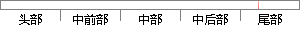

删除任务后只有一个任务在运行。
片段位置图

相似结果
相似片段：判断锁文件是否存在,存在则退出任务,不存在则建立锁文件,任务执行完毕时删除该...2、然后A在执行后会创建一个文件,B脚本中在执行前检查这个文件是否存在,如果不...
| 标题 | 《crontab 执行定时任务如何控制前一个任务执行完后再启动下一个...》 |
| 对比库 | PaperRater云论文库 |
| 网址 | http://www.dewen.org/q/1144 |
| 相似率 | 66.67% （轻度抄袭） |
※ 片段修改建议 ※
近似词参考：- 任务：使命 义务
- 只有：怜惜
系统自动生成语句： 删除使命后怜惜一个使命在运行。
注：本片段修改建议为系统自动生成，仅供参考。